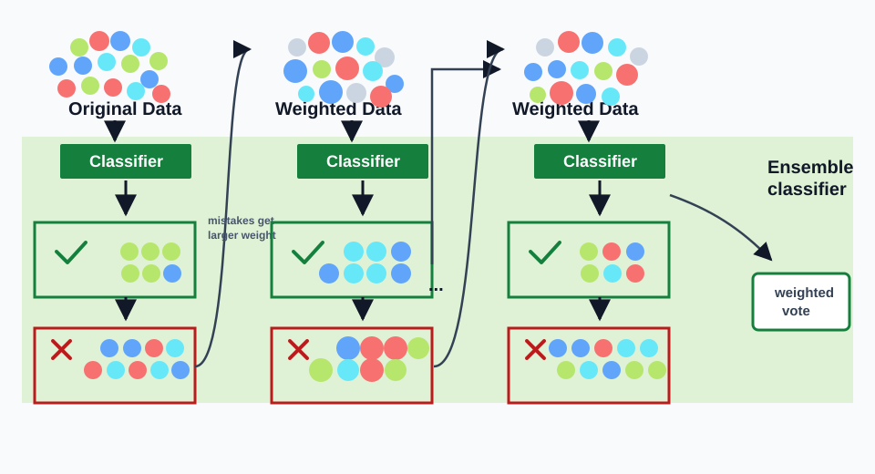

🌳 AdaBoostAdaBoost
🚀 Boosting · AdaBoost
Boosting is the sequential ensemble idea at the end of Lecture 8. AdaBoost builds a strong classifier by repeatedly adding weak classifiers that focus on the examples the current ensemble handles poorly.
1. Concept Understanding
AdaBoost is a sequential ensemble method. It combines many weak learners, each only required to perform slightly better than random guessing, into a stronger classifier.
It maintains weights over training examples. Initially all examples are equally weighted. After each weak classifier, misclassified examples receive more weight, so the next weak learner pays more attention to them.
The final classifier is a weighted majority vote: each weak learner predicts, and the more reliable learners receive larger coefficients in the vote.
2. Plain-English Explanation
Boosting is like a tutor who keeps a mistake notebook. Every time you miss a type of question, that question gets circled, highlighted, and shown again in the next practice round.
Easy examples fade into the background; hard examples get louder. The final decision is a weighted committee of all the small tutors.
3. Core Intuition
Bagging reduces variance by averaging independent learners. Boosting reduces bias by combining weak learners sequentially, each one correcting the current ensemble's weak spots.
AdaBoost can be derived as a forward stagewise additive model that minimizes exponential loss. The sample weights are exactly the loss-induced emphasis on examples with low or negative margins $y_iF(x_i)$.

- Top row: the training distribution changes. Larger dots mean larger sample weights.
- Middle green boxes: each weak learner gets some examples right and contributes a vote.
- Bottom red boxes: mistakes are fed forward by increasing their weights, so later learners focus on them.
- Right side: the final classifier is not one learner; it is the weighted ensemble vote.
- Initialize. Set every observation weight to $w_i^{(1)}=1/N$.
- Fit. Train weak classifier $G_m(x)$ using the current weights.
- Measure. Compute the weighted error $err_m$.
- Trust. Convert that error into a classifier weight $\alpha_m$.
- Reweight. Increase weights on mistakes, normalize, and repeat.
- Predict. Output the sign of the weighted vote.
4. Key Equations
What it does. AdaBoost does not average classifiers equally. It adds a signed, weighted vote from each weak learner, then takes the sign of the final score.
What it does. This is the fraction of total weight placed on the examples that the current weak learner gets wrong.
What it does. If $err_m<0.5$, then $\alpha_m>0$ and the learner is trusted. If $err_m=0.5$, then $\alpha_m=0$. If $err_m>0.5$, $\alpha_m<0$, which effectively flips the learner's vote.
What it does. Exponential loss punishes low or negative margins heavily, so badly handled examples dominate the next round.
What it does. The weight is an exponential transform of the current margin. Poorly classified points receive large weights.
What it does. Correct predictions are multiplied by $e^{-\alpha_m}$ and shrink. Mistakes are multiplied by $e^{\alpha_m}$ and grow.
What it does. The optimal score is half of the log-odds. Positive score means class $+1$ is more likely; negative score means class $-1$ is more likely.
What it does. If every weak learner beats random guessing by a fixed margin, the training error drops exponentially fast with the number of rounds.
5. Worked Examples
Start with a uniform distribution over data. Ask a weak learning oracle for a classifier. Reweight examples where the ensemble is bad. Repeat. This is the high-level AdaBoost loop.
The new loss factors as $w_i\exp(-\alpha_t y_i f_t(x_i))$, where $w_i=\exp(-y_iF_{t-1}(x_i))$. If the current ensemble gets example $i$ wrong, $y_iF_{t-1}(x_i)<0$, so $w_i$ becomes large.
For a fixed weak classifier, the loss becomes proportional to $(1-\epsilon)e^{-\alpha}+\epsilon e^\alpha$. Setting the derivative to zero gives $e^{2\alpha}=(1-\epsilon)/\epsilon$, hence $\alpha^*=\frac12\log((1-\epsilon)/\epsilon)$.
Viola-Jones uses AdaBoost to select useful rectangle features from a large pool of simple box filters. The exam point is not image processing detail; it is that boosting can choose and weight many weak feature tests into a fast face detector.
6. Problem-Solving Tips
| Feature | Bagging | Boosting / AdaBoost |
|---|---|---|
| Execution | Parallel, independent models | Sequential, later models depend on earlier mistakes |
| Data usage | Bootstrap samples | Same data with adaptive weights |
| Main effect | Reduces variance | Often reduces bias and improves margins |
| Base learner | Can use deep or unstable learners | Usually simple weak learners, such as stumps |
| Noise | More robust to noisy labels | More sensitive to noisy labels and outliers |
7. Common Mistakes
- Calling boosting parallel. It is sequential because later learners depend on earlier mistakes.
- Forgetting the weak learner is chosen using weighted error, not plain error.
- Assuming a classifier with $\epsilon>0.5$ should be trusted as-is. It should be flipped or rejected.
- Forgetting to normalize sample weights after the update.
- Assuming more boosting rounds are always safer. More rounds increase complexity and can overfit noise.
- Ignoring noisy labels: boosting can chase them because their weights keep growing.
8. Exam Focus
- Explain the AdaBoost.M1 loop from uniform weights to weak learner to reweighting.
- Write the weighted error, classifier coefficient, weight update, and final vote formulas.
- Derive the factorized exponential loss.
- Derive $\alpha_t^*=\frac12\log((1-\epsilon_t)/\epsilon_t)$.
- Know the population minimizer as half log-odds and the weak-edge training-error bound.
- Remember the bias-complexity trade-off: more rounds lower approximation error but can raise estimation error.
- Compare bagging and boosting cleanly.
9. Quick Checklist
- I know boosting is sequential.
- I know hard examples get larger weights.
- I can write the final vote $G(x)=\operatorname{sign}(\sum_m\alpha_mG_m(x))$.
- I can compute $err_m$ using sample weights.
- I can derive or recognize the AdaBoost $\alpha_t$ formula.
- I can explain why $err_m>0.5$ implies a negative coefficient.
- I remember Viola-Jones as an AdaBoost feature-selection application.
- I remember boosting is more noise-sensitive than bagging.
🚀 Boosting · AdaBoost
Boosting 是 Lecture 8 末尾的 sequential ensemble 思想。AdaBoost 通过不断加入 weak classifiers，专门修正当前 ensemble 处理不好的样本，最后组成 strong classifier。
1. Concept Understanding · 概念理解
AdaBoost 是一种 sequential ensemble：把很多只比 random guessing 稍微好一点的 weak learners 组合成一个 strong classifier。
它会维护 training examples 的 weights。初始时每个样本同权；每加入一个 weak classifier，被错分的样本权重变大，下一轮 weak learner 会更关注它们。
最终 classifier 是 weighted majority vote。每个 weak learner 都投票，但更可靠的 learner 会有更大的 coefficient。
2. Plain-English Explanation · 大白话理解
Boosting 像一个拿着错题本的老师。你错过的题会被圈出来、加粗、下一轮继续练。
简单样本慢慢退到背景里；难样本声音越来越大。最后的判断来自一组小老师的 weighted committee。
3. Core Intuition · 核心直觉
Bagging 通过 averaging independent learners 降低 variance；Boosting 通过 sequential correction 降低 bias，让每个新 learner 盯着当前 ensemble 的弱点。
AdaBoost 可以看成 forward stagewise additive model，用一轮一轮加 weak learner 的方式最小化 exponential loss。Sample weights 本质上是在强调 margin $y_iF(x_i)$ 小或为负的样本。
- Top row: training distribution 在变；点越大代表 sample weight 越大。
- Middle green boxes: 每个 weak learner 都会正确处理一部分样本，并贡献一次 vote。
- Bottom red boxes: 错分样本会被传到下一轮，因为它们的 weights 被放大。
- Right side: 最终模型不是某一个 learner，而是 weighted ensemble vote。
- Initialize. 所有 observation weights 设成 $w_i^{(1)}=1/N$。
- Fit. 用当前 weights 训练 weak classifier $G_m(x)$。
- Measure. 计算 weighted error $err_m$。
- Trust. 把 error 转成 classifier weight $\alpha_m$。
- Reweight. 错分样本权重变大，normalize 后进入下一轮。
- Predict. 最后输出 weighted vote 的 sign。
4. Key Equations · 核心公式
这个公式在做什么？ AdaBoost 不是简单平均 classifiers，而是把每个 weak learner 的 signed weighted vote 加起来，最后看总分正负。
这个公式在做什么？ 它不是普通 error rate，而是“错分样本占了多少总权重”。难样本权重大，所以错一个难样本代价更高。
这个公式在做什么？ 若 $err_m<0.5$，则 $\alpha_m>0$，说明 learner 比 random guessing 好；若 $err_m=0.5$，$\alpha_m=0$；若 $err_m>0.5$，$\alpha_m<0$，相当于 flip 它的预测方向。
这个公式在做什么？ Exponential loss 会特别惩罚 margin 小或为负的样本，所以这些样本会主导下一轮学习。
这个公式在做什么？ Weight 是当前 margin 的 exponential transform。当前分得越差，weight 越大。
这个公式在做什么？ 预测正确时权重乘 $e^{-\alpha_m}$ 变小；预测错误时权重乘 $e^{\alpha_m}$ 变大。
这个公式在做什么？ 最优 score 是 log-odds 的一半。score 为正表示 $+1$ 更可能，为负表示 $-1$ 更可能。
这个公式在做什么？ 只要每个 weak learner 都稳定地比 random guessing 好一点，training error 就会随 rounds 指数下降。
5. Worked Examples · 代表性例题
从 uniform distribution over data 开始；调用 weak learning oracle 得到一个 classifier；把当前 ensemble 表现差的样本 reweight；重复这个过程。这就是 AdaBoost 的高层循环。
新 loss 可分解成 $w_i\exp(-\alpha_t y_i f_t(x_i))$，其中 $w_i=\exp(-y_iF_{t-1}(x_i))$。如果当前 ensemble 把样本 $i$ 分错，$y_iF_{t-1}(x_i)<0$，所以 $w_i$ 变大。
固定 weak classifier 后，loss 正比于 $(1-\epsilon)e^{-\alpha}+\epsilon e^\alpha$。令导数为 0 得 $e^{2\alpha}=(1-\epsilon)/\epsilon$，所以 $\alpha^*=\frac12\log((1-\epsilon)/\epsilon)$。
Viola-Jones 用 AdaBoost 从大量 rectangle box filters 里选出有用 features。考试不需要展开图像处理细节，重点是：boosting 可以把很多简单 feature tests 选出来并加权，组成快速 face detector。
6. Problem-Solving Tips · 解题技巧
| Feature | Bagging | Boosting / AdaBoost |
|---|---|---|
| Execution | Parallel，models independent | Sequential，后面依赖前面错在哪里 |
| Data usage | Bootstrap samples | 同一批数据，但 adaptive reweighting |
| Main effect | 主要降低 variance | 通常降低 bias、改善 margins |
| Base learner | 可用较深、较不稳定的 learners | 通常用简单 weak learners，例如 stumps |
| Noise | 对 noisy labels 更 robust | 对 noisy labels / outliers 更 sensitive |
7. Common Mistakes · 常见错误
- 把 boosting 说成 parallel；它是 sequential，因为后一轮依赖前一轮错误。
- 忘记 weak learner 是按 weighted error 选择，不是 plain error。
- 以为 $\epsilon>0.5$ 的 classifier 可以直接信任；通常要 flip 或 reject。
- 忘记每轮 weight update 后要 normalize。
- 以为 boosting rounds 越多一定越安全；rounds 增多会提高 complexity，遇到 noise 可能 overfit。
- 忽略 noisy labels：boosting 会反复追着它们，因为它们的 weights 不断变大。
8. Exam Focus · 考试重点
- 能解释 AdaBoost.M1 从 uniform weights 到 weak learner 再到 reweighting 的循环。
- 能写 weighted error、classifier coefficient、weight update、final vote 四个公式。
- 能推导 factorized exponential loss。
- 能推导 $\alpha_t^*=\frac12\log((1-\epsilon_t)/\epsilon_t)$。
- 知道 population minimizer 是 half log-odds，也知道 weak-edge training-error bound。
- 记得 bias-complexity trade-off：更多 rounds 降 approximation error，但可能提高 estimation error。
- 能清楚比较 bagging 和 boosting。
9. Quick Checklist · 速记清单
- 我知道 boosting 是 sequential。
- 我知道 hard examples 会得到更大 weights。
- 我能写 final vote：$G(x)=\operatorname{sign}(\sum_m\alpha_mG_m(x))$。
- 我能用 sample weights 计算 $err_m$。
- 我能识别 / 推出 AdaBoost 的 $\alpha_t$ 公式。
- 我能解释为什么 $err_m>0.5$ 会得到 negative coefficient。
- 我记得 Viola-Jones 是 AdaBoost 的 feature-selection application。
- 我记得 boosting 比 bagging 更 noise-sensitive。